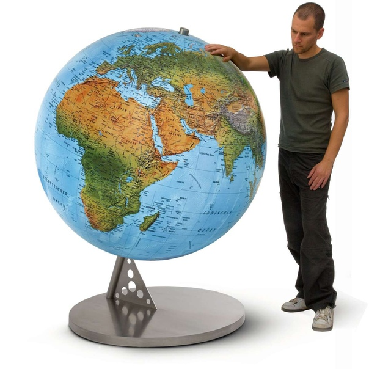

The world is a book and those who do not travel read only one page. > -
St. Augustine

There are so many nice places on the
planet Earth .They are scattered across the country.Every place has its own distinct
features. Some places have scenic beauty in abundance while many are
famous for their architectural wonders. In addition every person has
different tastes, choices and likings. Several people enjoy the sight of
scenic beauty; some are attracted A few may be interested in visiting
places of religious importance. I want to share places, which I realy
want to visit.